AI is moving into the physical world
Robots, autonomous fleets and AI agents are leaving the lab for airports, stations, hospitals and malls: spaces that change every day.
Deep World Model · The Spatial Brain for the physical world
We are building the world model for physical AI: a living, real‑time 3D understanding of the world's buildings, grown from ordinary phones and the signals already in the air, and shared by people, robot fleets and AI agents.
Our mission
Give every physical space a living memory that people, robots and AI agents can share.
Our vision
AI has learned to read, write, see and reason. It still does not know where it is.
A language model can plan a journey but cannot see the closed escalator. A delivery robot can walk, but not past last night's new hoarding. A digital twin is out of date the morning after it is delivered. Every machine entering the physical world needs the same missing piece: a model of the space that is true right now.
We believe that model should be one shared brain per building, not a hundred private models: grown from the devices already in people's pockets, grounded in physics, kept current by everyone who walks through, and open to every robot, agent and app.
A world where every machine, in every building on Earth, knows where it is, what is around it, and what just changed.
Step inside · real captures, not renders
Two of the busiest public spaces in Asia, reconstructed by the Deep World Model as photoreal Gaussian splats. Running live in your browser. Drag to look around, scroll to move.
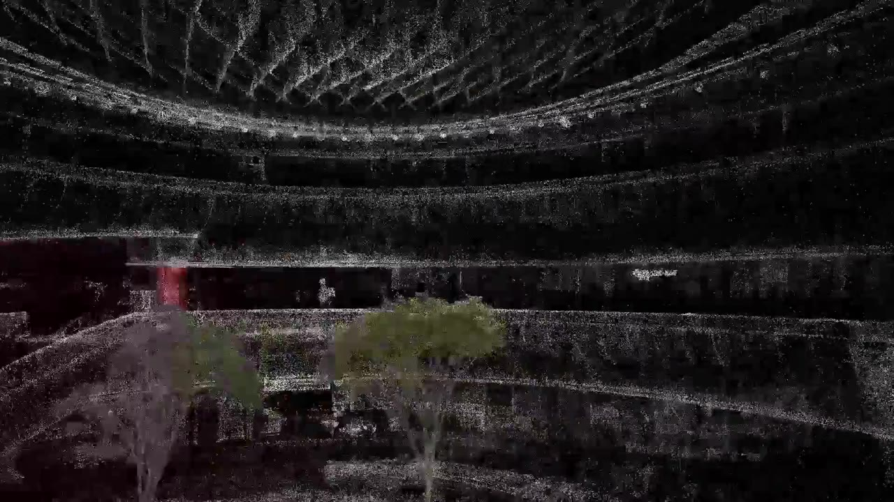
Why now
Four shifts are converging, and the buildings we live in are the frontier AI understands least.
Robots, autonomous fleets and AI agents are leaving the lab for airports, stations, hospitals and malls: spaces that change every day.
People spend roughly 90% of their lives inside buildings, yet that is the part of the world AI understands least, and the part that goes out of date fastest.
A laser scan costs about $100K and three weeks per zone, and starts going stale the day it is delivered.
Every building is full of Wi‑Fi, Bluetooth and geomagnetic fields that encode its shape, and every visitor carries a sensor.
The problem
Robots and AI agents need a world model that is true right now. Laser scans and BIM files go stale within days, and stale models make robots crash and agents answer wrongly, confidently.
Static scans · BIM · point clouds
to refresh a single zone, with laser rigs, survey crews and closures. Out of date by the time it ships.
Deep World Model
to regenerate a changed micro‑zone from a phone, with the building open. The model grows in accuracy and semantic value the longer it runs.
How it works · Signal‑to‑Structure
Most 3D capture needs laser scanners or thousands of images. DWM starts with the invisible: the Wi‑Fi, Bluetooth and geomagnetic signals that already encode a building's layout. Vision is layered on physics, not the other way round.
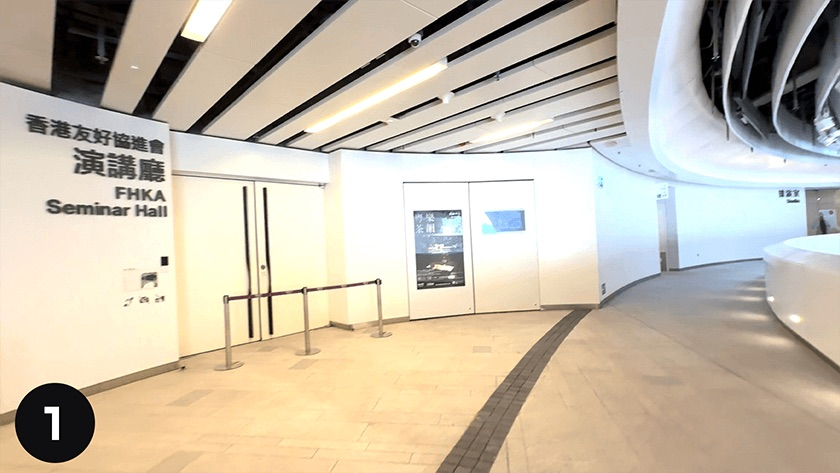
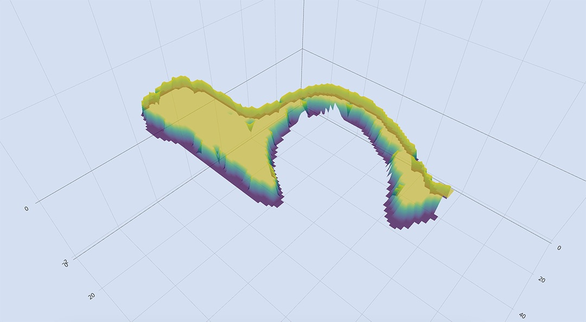
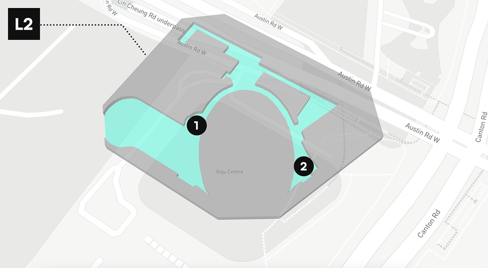
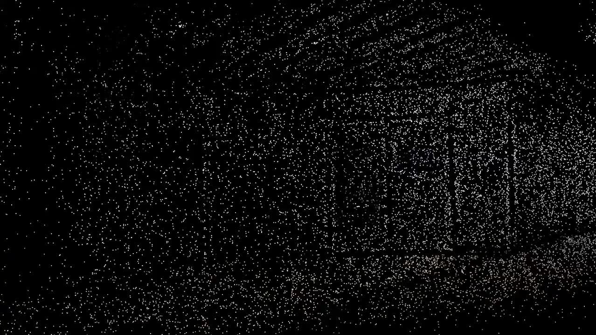
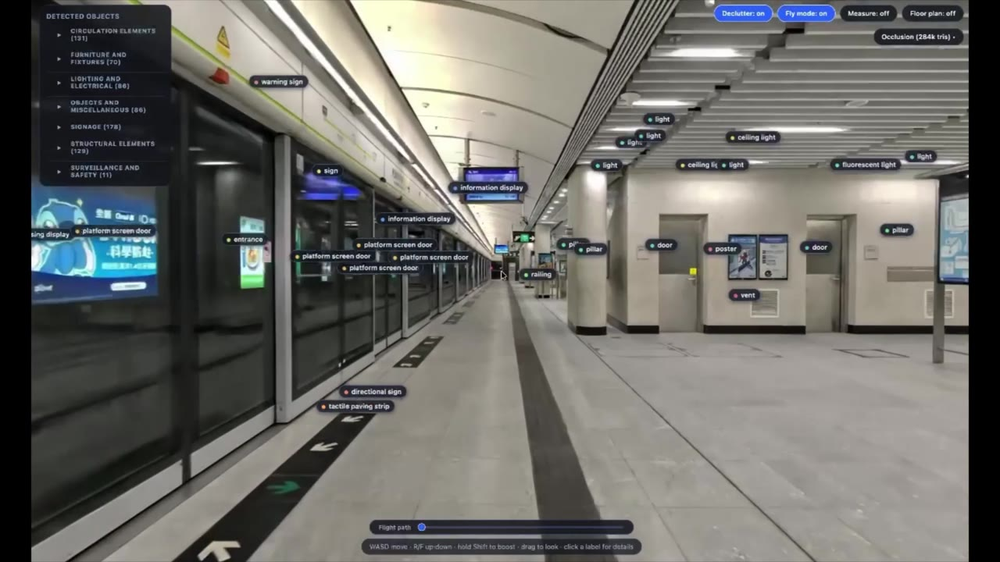
What's inside the Spatial Brain
Six properties that separate a living world model from a 3D snapshot.
Fuses ambient Wi‑Fi, BLE and geomagnetic signals with vision, so reconstruction rests on physical measurement and pure‑vision hallucinations drop sharply.
Detects local changes from a phone or CCTV feed and regenerates only the altered zone in under an hour, with no full‑building rescan.
Built from mobile devices and crowd motion during normal operating hours, through the Beetle app. Zero closures, zero laser rigs.
Knows what every voxel is: exits, fare gates, clearance limits, step‑free paths. Vertical heads pretrained for aviation, rail, campus, retail and government.
Natural‑language spatial query and routing for staff and AI agents, exposed through MCP‑style tools for planning and lookup.
VDA 5050 and Open‑RMF for fleets, OpenUSD for 3D, ROS 2 for motion. One shared world model instead of ten vendor silos.
Living World Model · always current
A scan records how a building looked on the day of the survey. The Deep World Model keeps watching. The CCTV cameras a venue already runs become its eyes. Each camera is registered into the model, each frame is checked against what the model expects to see, and only the part that changed is rebuilt. The building stays open and the world model stays current.
The skeleton. Built once from ambient signals and phones, and rebuilt only when the building is renovated.
Rarely changesWhat operations move every day. Detected on CCTV and patched as a partial update to the affected micro‑zone.
Healed in under an hourThe pulse of the space. Streamed as an anonymous live layer on top of the geometry, never baked into it.
LiveEach existing camera is solved to a 6‑DoF pose inside the model, once, from its own footage. No calibration targets, no site visit.
The model renders what that camera should see. Live frames are compared with it, and people and passing motion are filtered out so only persistent change counts.
Each confirmed difference is lifted into 3D and snapped to the micro‑zone tiles it touches. The rest of the building is left untouched.
Only those tiles are re‑optimised, versioned and pushed to the change feed, so robots, agents and apps act on the new reality.
One tile changes, so one tile is rebuilt.
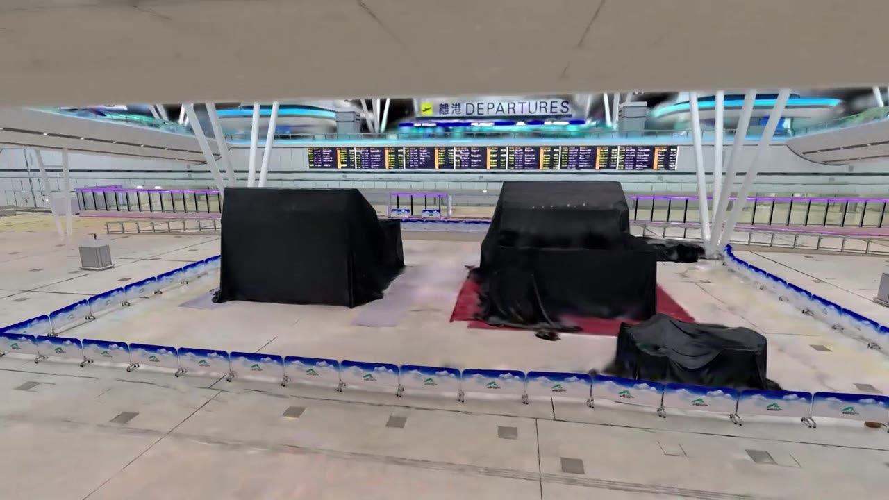
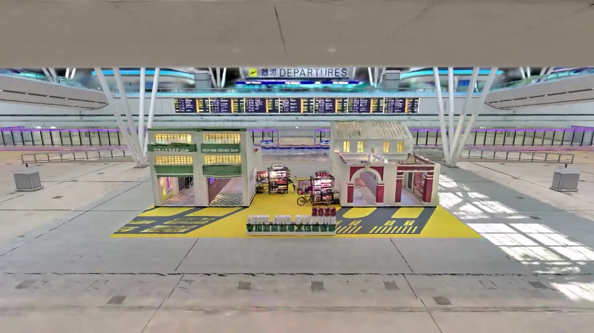
Before · capturedAfter · regeneratedA departure hall after an overnight layout change, with only the changed zone regenerated. Drag to compare.
Science & research
The Deep World Model is designed, built and run by the Collectiv team. That includes its architecture, the spatial‑semantic model, the Signal‑to‑Structure pipeline, micro‑zone self‑healing and the production system live across 100+ venues. Alongside this work, Collectiv's co‑founder and Chief Scientist, Professor S.‑H. Gary Chan, and his Smart IoT and Sensing Systems Group at HKUST publish academic research in areas the model touches: ambient‑signal positioning, learning from unlabelled crowd data, people sensing from video and camera‑based 3D localisation.
Professor, Department of Computer Science and Engineering, The Hong Kong University of Science and Technology · Associate Director, GREAT Smart Cities Institute
Selected figures from Professor Chan's peer‑reviewed research, shown next to the parts of the Deep World Model they relate to. They illustrate the science around the problems we work on. The Deep World Model, its methods and its production system are Collectiv's own engineering, and may differ from what is published. Click any figure to enlarge it.
In the paperPhones' RF, magnetometer, accelerometer and gyroscope streams are mapped onto a floor-plan graph to build RF and geomagnetic fingerprints, with no one labelling anything.
Why it matters to usRelated to how we approach capture: everyday phones, ambient signals first, pixels second.
In the paperAccelerometer and Wi‑Fi traces from ordinary walkers, plus a handful of landmarks, are turned into a full radio map through learned topology.
Why it matters to usShares an idea behind Signal‑to‑Structure: crowd traces as low‑cost anchors in place of a site survey.
In the paperGraph embeddings of crowdsourced RF samples separate cleanly by floor (a), where MDS and autoencoder baselines blur together (b, c).
Why it matters to usRelevant to a problem we also face: placing crowd samples and photos on the right floor of a multi‑level venue.
In the paperA sitemap is lifted into a bootstrap mesh, and depth and semantic conditions then guide video diffusion to complete a multi‑storey atrium in 3D.
Why it matters to usExplores a challenge close to ours: completing large atria and concourses consistently across levels.
In the paper2D image features are aligned directly with the 3D point cloud. Ambiguous matches (red triangles, ellipses) become correct ones (blue).
Why it matters to usClosely related to the first step of the living loop: estimating where a camera sits inside a 3D model.
In the paperFaster R‑CNN detects landmarks in video, and a KCF tracker follows them across frames, so only key frames need full detection.
Why it matters to usAn early example of the detect‑and‑track pattern for turning video into named, placed objects.
In the paperThe same access point's signal map on a campus, two months apart. Buildings change, signals drift, and a map built once goes stale.
Why it matters to usIllustrates why a spatial model has to keep updating: physical signals drift as buildings change.
In the paperCrowd density maps on domains never seen in training. MPCount's counts stay close to ground truth where a prior method overshoots.
Why it matters to usRelevant to the activity layer: estimating crowd density from cameras in unfamiliar venues.
Figures reproduced from the cited publications for reference and commentary · © the respective authors and publishers · Inclusion does not imply that the Deep World Model implements the published method
Research on grounding location in physical measurement: Wi‑Fi, BLE and geomagnetic maps built from crowds and kept current without a site survey.
Research on learning from messy, unlabelled, crowd‑sourced data and transferring to venues not seen before.
Research on sensing people and activity: how many, where, and how they move, from video and from the devices they carry.
Research on registering images and video into 3D and on completing missing geometry.
Selected peer‑reviewed papers · titles link to the authors' PDFs
Side by side
| Static scan / BIM | Deep World Model | |
|---|---|---|
| Capture | Laser rigs, survey crew, closures | 2 phone photos + ambient signals |
| Refresh a zone | ~3 weeks, ~$100K | Under an hour, crowdsourced |
| Currency | Stale within days | Self‑healing, continuously current |
| Live sensing | None | Existing CCTV, registered into the model |
| Semantics | Geometry only, or hand‑tagged | ~1,200 classes, voxel‑level |
| Machine access | Files to download and convert | Live API, change feed, agent tools |
| Over time | Decays | Grows in accuracy and semantic value |
For builders · robots, agents and apps
Robots, AI agents and apps get the same live model: geometry to move through, objects to reason about, and a feed of what changed.
Illustrative request and response shapes · API access by invitation · SDKs coming to this repo
Developer preview · SDKs
Python, TypeScript, ROS 2, an MCP server for AI agents, and a CLI, all on the same live model. Here is the surface we are shipping into this repository.
SDK preview · interfaces may change before release · API access by invitation
Live today · not a concept
100+ venues live. 5M+ people a day and 1.7B+ journeys a year move through spaces the model sees.
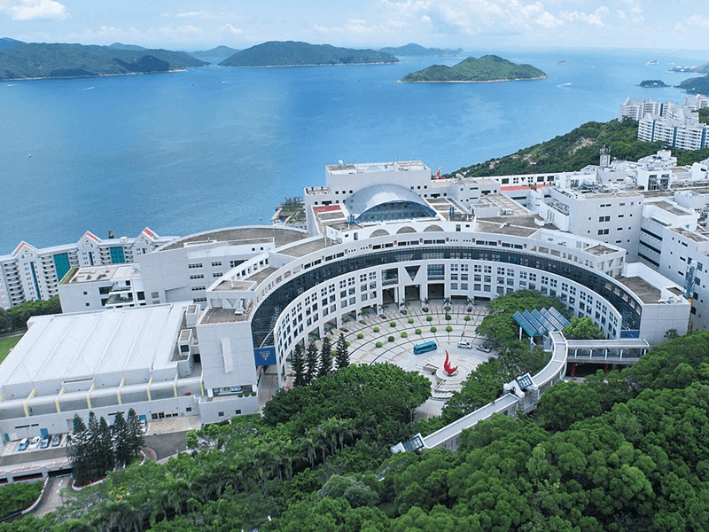
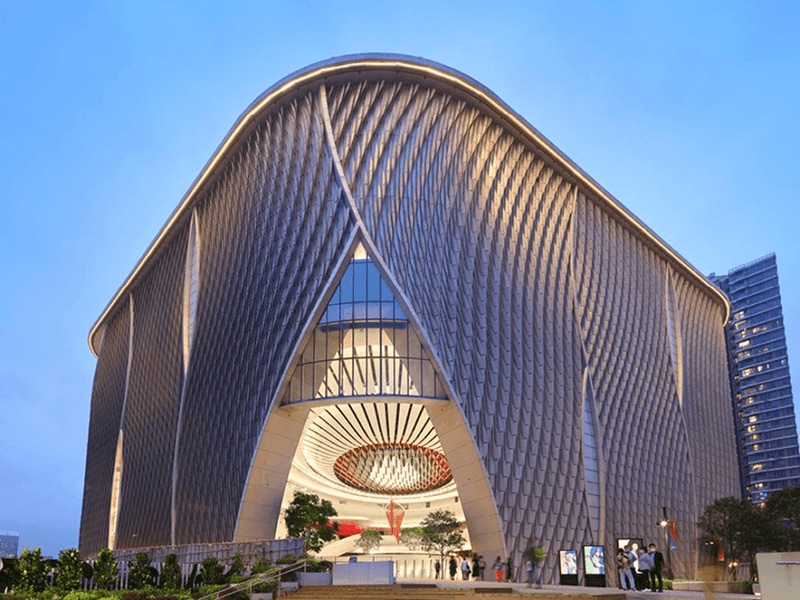
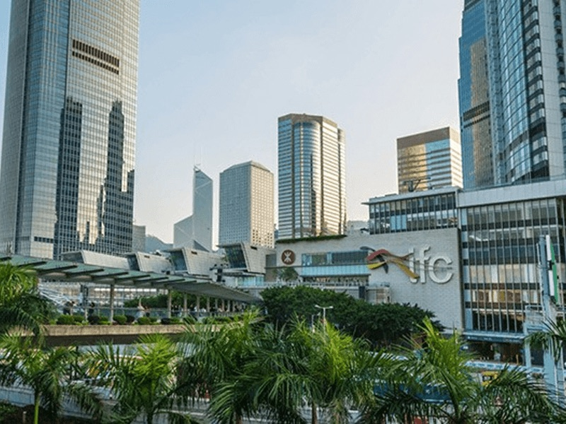
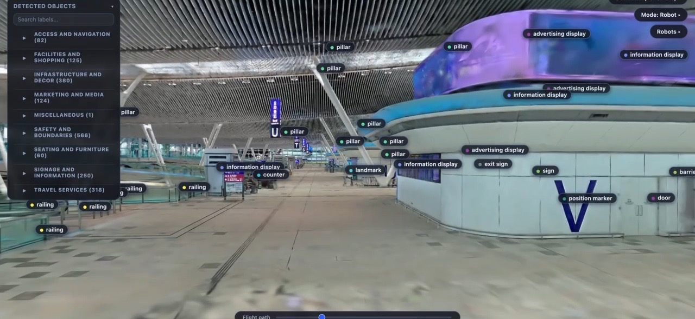
From one building to every building
What becomes possible when every space has a brain: airports that run themselves better, transit that is accessible by default, robots that work anywhere on day one, and AI agents that can act, not just answer.
Across some of Asia's busiest airports, rail networks, campuses, resorts and malls.
SDKs, an MCP server and open exporters, so any robot or agent can plug in.
A continuously updated world model of the built environment, the ground truth physical AI runs on.
Roadmap · this repository
The model runs in production today. Here is what lands in this repo next. Star or watch it to follow along.
Cite
@misc{collectiv2026deepworldmodel,
title = {Deep World Model: The Spatial Brain for the Physical World},
author = {{Collectiv}},
year = {2026},
howpublished = {\url{https://deep3d.world}},
note = {Real-time, signal-grounded 3D world model of complex infrastructure}
}
Work with us
Venues, robotics teams, researchers and investors: if you believe every building deserves a brain, we want to hear from you.